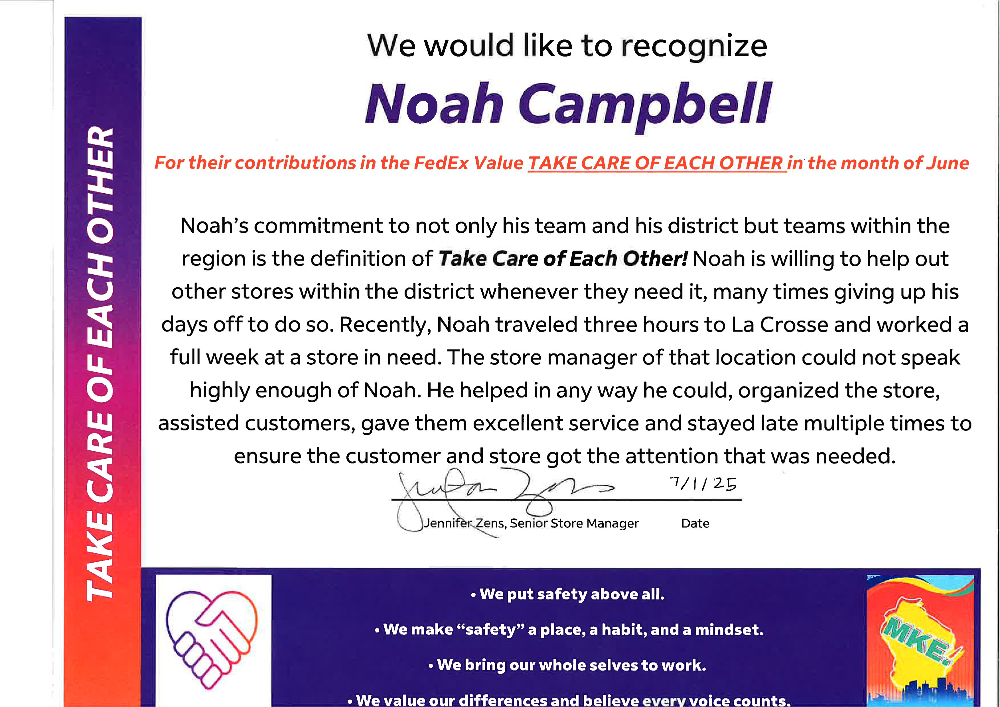

This project was my first ever solo project at an attempt to make a showcase and contact from website, it was designed entirely by myself, with the purpose of being a website to scroll through quickly and see some of the work by the artist. If you were interested, you would then use the contact form on the website.
Second ProjectThis is my second project, I thought I would put my newly learned JavaScript skills to the test by building a simple random number generator.
Third ProjectFor my third project, I once again wanted to work on my retention of JavaScript, using the Math Operator. Just like project 2, In project three I created an array of names, and then used the Math Operator to randomly select a name from the array and display it on the screen.
Fourth ProjectFor my fourth project, I wanted to work on my JavaScript skills by creating a simple counting program, with the help of a well known coding YouTuber that goes by the name "BroCode". it was a nice, short project to learn more about incrementing and decrementing numbers with JavaScript.
Fifth ProjectFor my fifth project, I purchased a an old Dell Oliplex 3040 computer with the intention of using it as a project computer to to create a starter home server. My goal with this home server was to create my own cloud storage solution, host game servers on on games such as Minecraft, Valhiem, etc. I also wanted to use this as an oppertunity to further my learning of Networking, and how nodes talk to each other in a LAN evnironment and over the internet.
Name: Noah Campbell
Field: Information Technology Student
Skills:
- Website Development: Hands-on experience with HTML, CSS, and JavaScript, building responsive, modern web applications.
- Cloud Architecture: Focused on AWS and Microsoft Azure; learning to design, deploy, and scale cloud solutions.
- Database Fundamentals: Basic knowledge of SQL Server; currently refreshing skills and deepening understanding through courses.
- Problem Solving & Design: Skilled in system modeling with tools like Microsoft Visio; adept at designing scalable, logical system structures.
- Continuous Learning: Committed to growth—currently pursuing a bachelor’s in IT, with a strong focus on cloud technologies and web development.
I’m passionate about technology and enjoy building systems that are efficient, secure, and scalable. I’m currently working toward a career in IT where I can continue learning and growing.
Hello, I’m Noah Campbell, an Information Technology student currently working toward my Associate of Arts degree. My passion lies in website development and cloud architecture—specifically building scalable web solutions and understanding cloud platforms like AWS and Microsoft Azure. I have a solid foundation in HTML, CSS, and JavaScript, and I’m actively building my skills through real-world projects. Alongside this, I’ve explored SQL Server for database fundamentals, and while I plan to refresh those skills, my true focus is on cloud computing and web technologies. I’m a lifelong learner, and I’m excited to continue building my expertise as I pursue my bachelor's degree in IT. My goal is to help design and architect modern, cloud-based solutions that empower businesses and users alike.
I have also cultivated technical skills outside of formal education—from troubleshooting and configuring peripheral devices like audio interfaces and routers to managing home networks. I’ve set up TP-Link routers, configured VPN services, and resolved ISP router issues. In addition, I developed a strong on-camera presence through a YouTube channel, where I honed my communication and on-screen personality. These projects gave me hands-on experience with Adobe Photoshop for visual design and Sony Vegas for video editing, broadening my creative and technical skill set.


